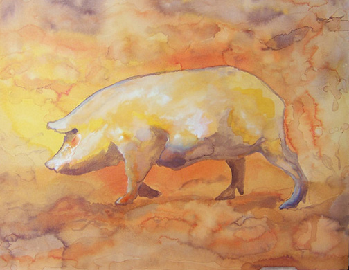
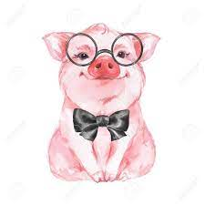
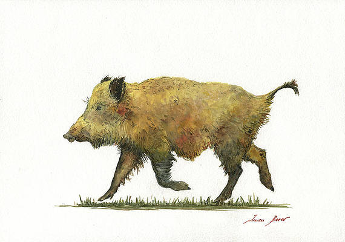
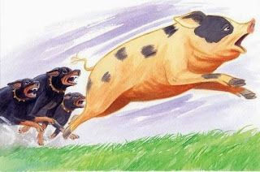

| The Pigs |
|---|
|

|

|
|

|
|

|
Animal farm, formerly and finally, the Manor Farm, is a farm in which the abused, mistreated, and downright disrespected animals, under the previous ownership of Mr. Jones, rebel and take over their lives and living conditions.
The leaders and workers of Animal Farm can effectively split into four categories, based on their species and standings within the farm itself. These categories are as follows:
The PigsAlthough personally disagreed by George Orwell himself, Animal Farm is a satirical jab at Communism and its shortcomings. Orwell, through his animals, portrays what he sees in Communism (not only its shortcomings, but also its working aspects).
Naturally, however, the leaders (The Pigs lead by Napolean himself) fall to their greed, continuously changing their "Constitution" to better serve themselves. This follows, rather naturally, real life Communism and its basis in the good of Leaders.
Animal farm even follows in the footsteps of many Communist countries history by starting their government off through a rebellion, namely the Battle of Cowshed, lead by the eventual scapegoat of Napolean, Snowball. It is here when we first get a glimpse at what may come, a dictatorship ran by Napolean.
By no surpise, Napolean eventually takes power by force, using the dogs which he hand picked and raised. Again, a real life telling of Communist history plays through in these scenes.
In the end, however, Napolean betrays the rebellion entirely, siding himself with the Humans whom they hated so vigorously. Again, greed, money, and power corrupt the leader of Communism based organization.
.jpg)
Animal farm is Orwell's telling of his experience with Communism and how it affects humans and how it so easily falls through to greed. Through Animal Farm, Orwell introduces his readers, who at the time were not knowledgeable of the real shortcomings of Communism, to the reality of a completely one person lead government.
.jpg)